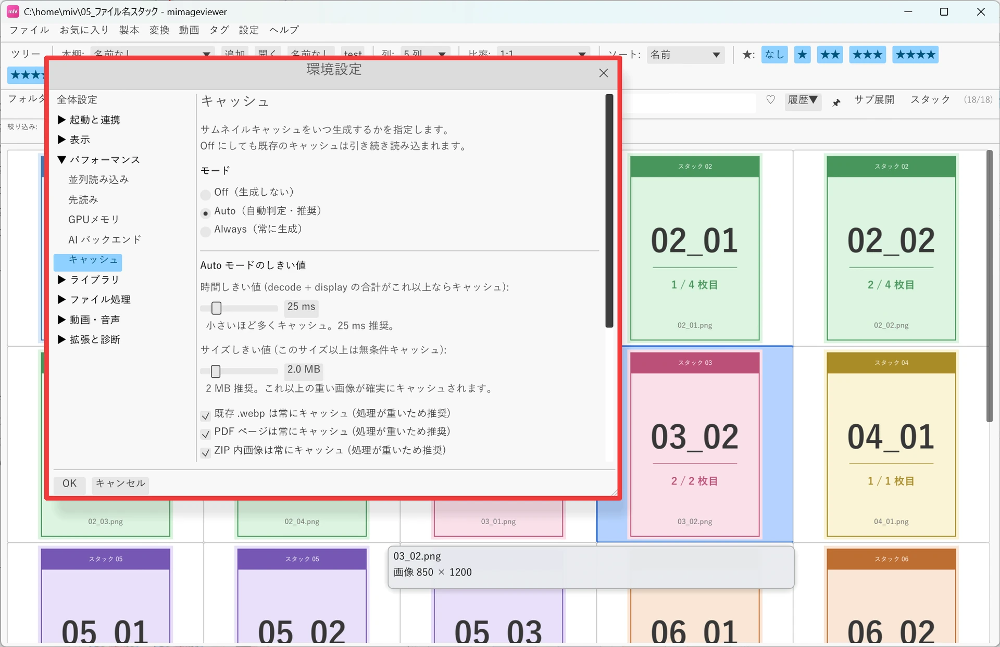
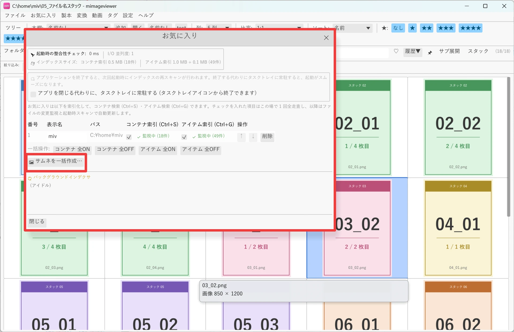
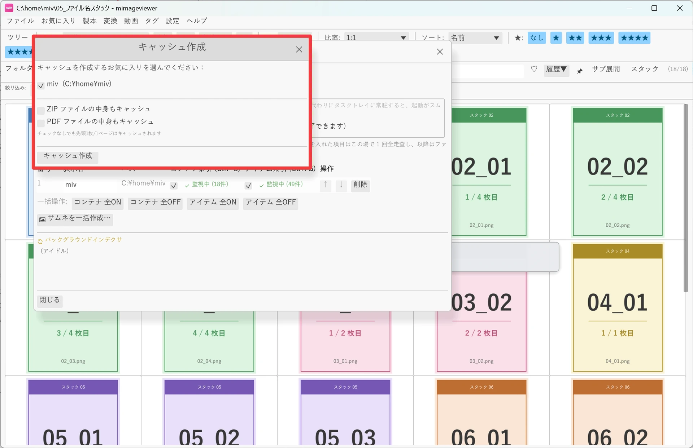
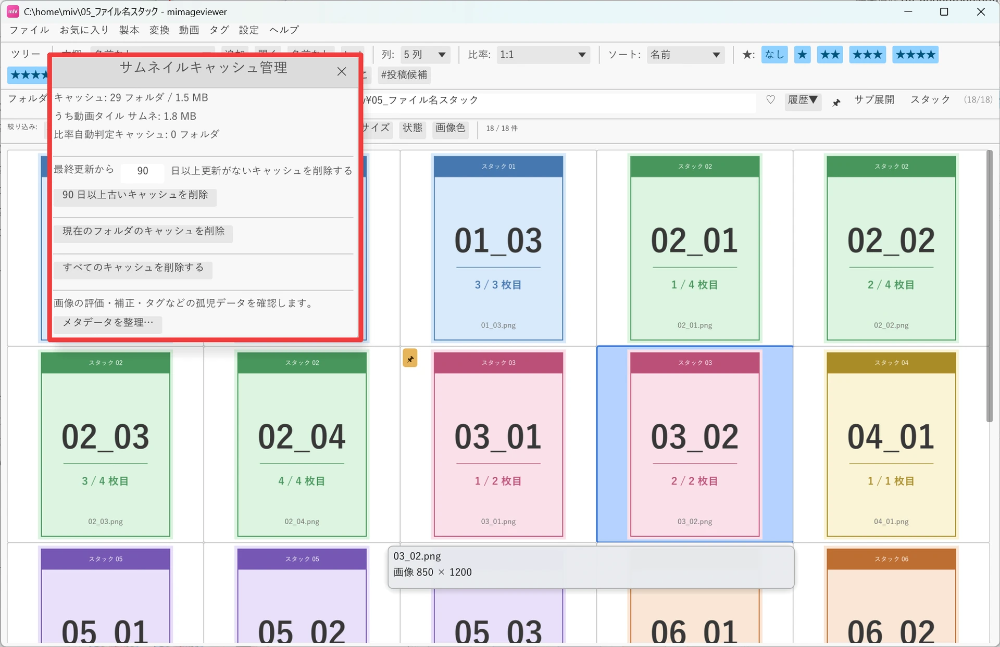

サムネイルキャッシュで高速表示
一度読み込んだサムネイルはキャッシュに保存され、次回同じフォルダを開いたときの表示が大幅に高速化されます。 写真が数千枚あるフォルダや、外付けドライブ・NAS 上のフォルダを何度も開き直す人ほど効果を実感しやすい機能です。 ここでは動作モードの違いと、大きいフォルダを先回りしてキャッシュしておく方法、たまったキャッシュの整理方法を順に見ていきます。
3 つの動作モード（Off / Auto / Always）
環境設定 → パフォーマンス → キャッシュの「キャッシュポリシー」で、キャッシュを作るかどうかの方針を選べます。
| モード | 動作 |
|---|---|
| Off | 新しいキャッシュは生成しませんが、既存のキャッシュは引き続き読み込みます |
| Auto（既定） | 読み込み時間やファイルサイズが閾値を超えた場合だけキャッシュします。軽い画像はキャッシュを作らず、時間のかかる画像だけを対象にする、バランス型の設定です |
| Always | すべてのフォルダでキャッシュを生成します。とにかく毎回速く開きたい場合に |
Auto モードのしきい値（既定：読み込み時間 25 ms、ファイルサイズ 2 MB）は同じ設定画面で調整できます。 また WebP・PDF・ZIP はそれぞれ「常にキャッシュ」の個別スイッチがあり、既定で有効です。

大きいフォルダを先回りしてキャッシュしておく
よく開くフォルダは、開く前にまとめてキャッシュを作っておくと、実際に開いたときに待ち時間がありません。 メニュー「お気に入り」→「編集」でお気に入りダイアログを開き、下部の 「サムネを一括作成…」ボタンを押すと、お気に入りフォルダ配下の全画像のサムネイルを 先回りで生成してキャッシュに保存できます。

ボタンを押すと「キャッシュ作成」ダイアログが開きます。対象のお気に入りにチェックを入れて 「キャッシュ作成」を押すと、バックグラウンドでまとめてサムネイルが生成されます。
- ZIP ファイルの中身もキャッシュ — ZIP 内の全画像をキャッシュします
- PDF ファイルの中身もキャッシュ — PDF 内の全ページをキャッシュします
どちらもチェックしない場合でも、ZIP・PDF の先頭 1 枚 / 1 ページはキャッシュされ、フォルダ一覧でサムネイルが表示されます。

たまったキャッシュを確認・整理する
設定 → サムネイルキャッシュ管理から、キャッシュの状態を確認して整理できます。
- キャッシュの合計フォルダ数・容量を確認する（動画のタイムラインサムネ分も表示されます）
- 指定日数以上更新されていないキャッシュだけをまとめて削除する
- 現在開いているフォルダのキャッシュだけを削除する
- すべてのキャッシュを削除する
